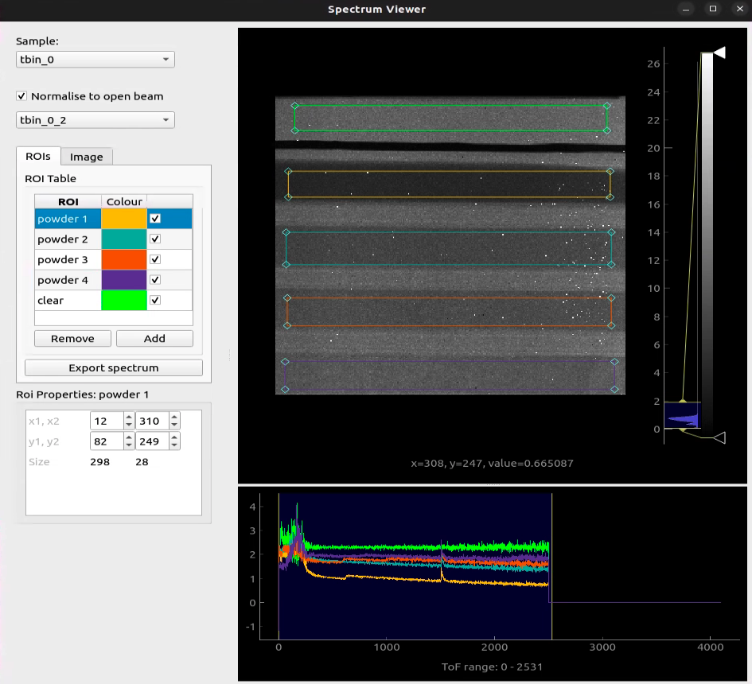

Spectrum Viewer¶
The Spectrum Viewer is a tool for viewing the spectrum of each region of interest (ROI) in time of flight (TOF) data.
The spectrum viewer can be accessed from the main menu under “Workflow” > “Spectrum Viewer”.
To try out the spectrum viewer, you can find a basic example workflow to follow within quick start
{kind=link}
Above you can see that the spectrum viewer consists of a left hand side panel and a right hand side panel. The left hand side panel contains the ROI selection tools and the right hand side panel contains the spectrum plot.
Similar to the image_view, the spectrum viewer has a histogram view to the right of the sample image to control the brightness and contrast of the displayed image. To read more about the histogram view see image_view .
Below the sample image is the spectrum line plot, which shows the intensity of each ROI as a function of the TOF value. You can select the TOF range to be displayed by clicking and dragging the mouse over the vertical bars on the left and right of the plot.
The Spectrum Viewer has two main modes of operation: “ROI” mode and “Image” mode.
ROI Mode¶
ROI mode is the default mode of the Spectrum Viewer. In this mode, you can add, rename and remove many ROIs to and from the spectrum viewer and view the spectrum of each ROI. The spectrum viewer can be used to export the spectrum of each ROI and its respective coordinates to a separate csv file.
To add an ROI, click the “Add” button and then click and drag the mouse over the newly created ROI within the sample image to resize and position the ROI. To rename an ROI, click on the ROI name you would like to rename within the table of ROI’s and type the new name. To remove an ROI, click on the ROI would like to remove within the table of ROI’s and the click the “Remove” button to remove.
ROI mode allows users to export the spectrum of each ROI and its respective coordinates to a separate csv file using the “Export spectrum” button. The export spectrum button will open a file dialog where you can select the directory and file name to save the csv file and is only enabled if you have selected a valid tomography data stack and open beam data stack. Both stacks must be the same shape and size. If the open beam is a different shape or size, the export spectrum button will be disabled and a warning message will be displayed.
Image Mode¶
Image mode, accessible by selecting the “Image” tab, is a mode of the Spectrum Viewer where you can view the spectrum within a singular region of interest (ROI) and export the spectrum in a format compatible with RITS . In this mode, you can select whether you would like to export your data in single spectrum or binned spectrum format. You can also select the step size and bin size. If the step size is the same as the bin size, a tiled average will be performed. If the step size is less than the bin size, a rolling average will be performed. The unit of measurement is pixels
{kind=link}
Error Mode¶
Additionally, you can choose between two different modes of error calculation: standard deviation and propagated error.
Choosing between Standard Deviation and Error Propagation will depend on the nature of your measurements and the sources of error.
Standard Deviation Mode: If you have multiple measurements of the same quantity (for example, repeated measurements of the same spectrum), and the errors are random and uncorrelated, then standard deviation would good a good choice of error mode to select.
Standard deviation will provide a spread of your measurements and can help you to identify outliers.
Propagated Error Mode: If your final result will be derived from multiple measurements through some formula (for example, calculating the lattice spacing using Bragg’s law), and you believe the errors are systematic and correlated, then error propagation may be the better choice. Error propagation will allow you to estimate how errors in individual measurements contribute to the error in the final result.
Both Standard Deviation and Error Propagation can be used in conjunction, You could use standard deviation to analyse the error in individual measurements, and then use propagated error to analyse how the errors affect your final result. The choice between the two methods depends on the specific details of your experiment and the nature of your data.
Similarly to the image view, the spectrum viewer requires a valid tomography data stack, open beam data stack and spectrum log file to be selected.
ROIs¶
Using the ROI selection tools, you can add, rename and remove many ROIs to the spectrum viewer and view the spectrum of each ROI. When you are happy with the ROIs you have created and positioned over the sample image, you can export the spectrum of each ROI and its respective coordinates to a separate csv file using the “Export spectrum” button.
Common Questions¶
Why would I want to export the spectrum for multiple ROI’s?
The spectrum viewer allows you to export the spectrum of each ROI and its respective coordinates to a separate csv file. This can be useful if you want to analyse the spectrum of each ROI in a different program or if you want to compare the spectrum of each ROI to each other for various areas across your sample.
Why do I need to normalise against the open beam to to export my data?
Normalising against the open beam is required to convert from counts to transmission. The Spectrum Viewer needs to convert measured counts to transmission, which is more physically meaningful as a quantity. It can be defined as the ratio of the intensity with the sample in the beam to the intensity without the sample (open beam). The ability to export data relies on an open beam to convert to transmission and is thus greyed out unless a valid open beam stack has been selected.
Why do I need to load a sample spectrum log file with my data to export to RITS? The conversion from counts to transmission in neutron imaging involves the use of both the sample data (counts) and the open beam data. The spectra file, which contains the energy or wavelength and corresponding intensity or counts, is also required in this process. The spectra file provides the energy or wavelength information for each count. This is needed for interpreting the transmission data, as different materials interact differently with neutrons of different energies or wavelengths.